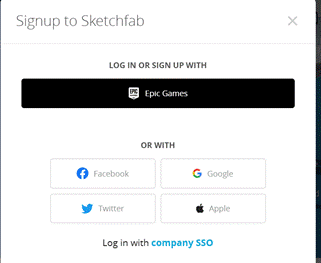
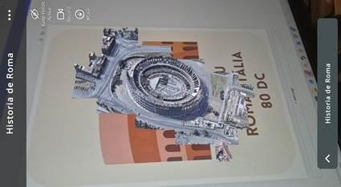
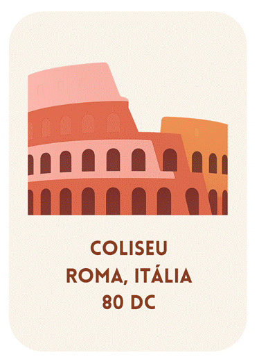
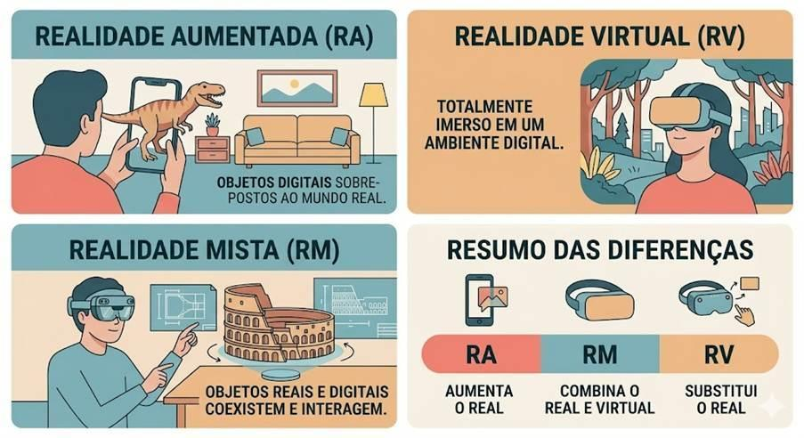
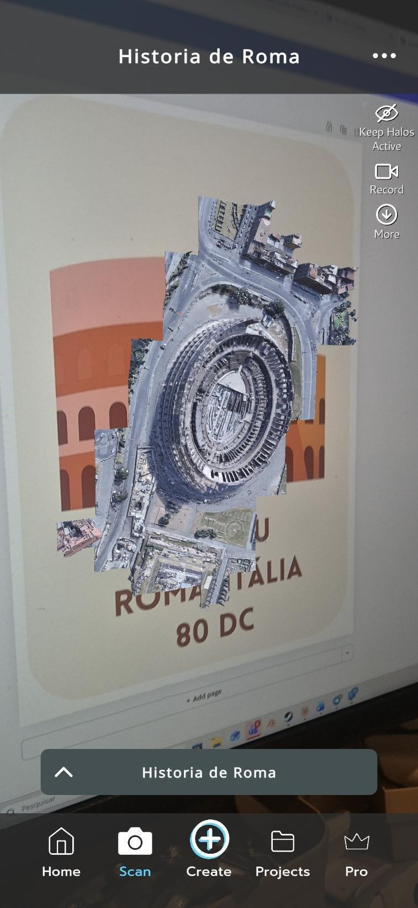
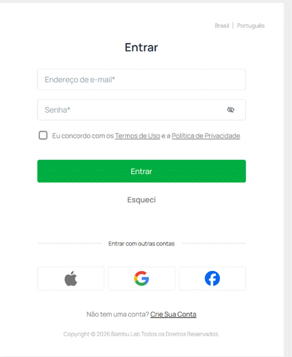
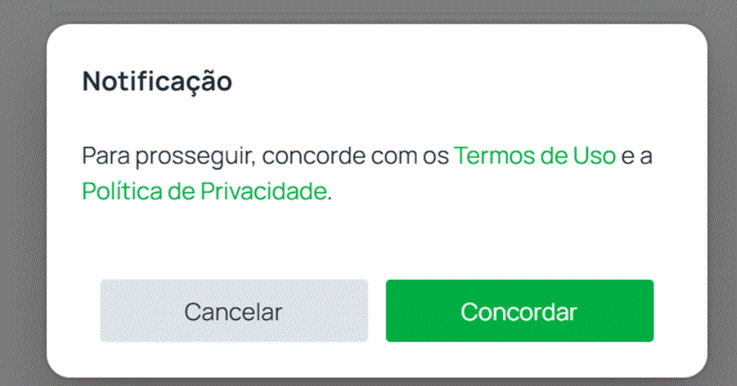
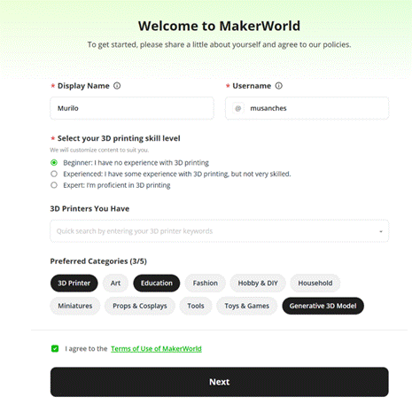
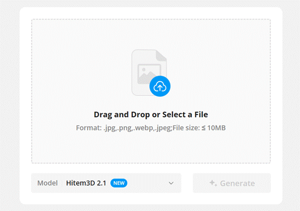
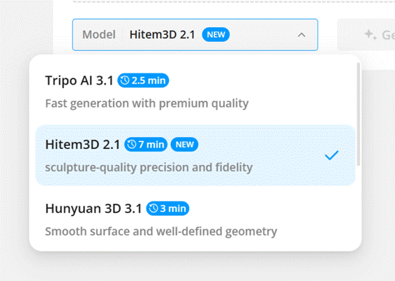

Recriando a realidade
Nesta oficina, os estudantes atuarão como curadores digitais de conteúdo histórico e cultural, criando flashcards interativos que ganham vida por meio da Realidade Aumentada (RA). Combinando design autoral, seleção orientada de modelos tridimensionais e tecnologia imersiva, cada estudante desenvolverá um produto digital: um flashcard criado no Canva Educação que, ao ser escaneado pelo app Halo AR, exibe um objeto histórico em 3D sobre a imagem impressa ou projetada, transformando qualquer superfície em um museu portátil e interativo.
O projeto percorre 3 ambientes digitais em sequência: o Canva Educação, para criação e design do flashcard com identidade visual própria; o Sketchfab, para seleção de modelos 3D com licença aberta; e o Halo AR, para configuração da experiência em RA. Por questões de segurança digital e gestão de contas, a navegação e o acesso ao Sketchfab deverão ser realizados pelo educador, que poderá disponibilizar previamente os modelos selecionados ou mediar a escolha. No decorrer desse percurso, por meio de uma criação simultaneamente técnica, cultural e autoral, os estudantes experimentarão, na prática, conceitos como transmissão de dados em tempo real, reconhecimento de padrões visuais, decomposição de problemas em etapas e uso ético de conteúdo digital.
Ao final, os flashcards podem ser impressos e dispostos nos corredores da escola, transformando o ambiente escolar em uma exposição visitável por toda a comunidade. A oficina posiciona a tecnologia não como um fim em si mesma, mas como ferramenta de expressão, preservação cultural e ampliação do acesso ao conhecimento histórico.
Estrutura da Oficina
Materiais
Lista de materiais/softwares/componentes necessários
(Preparação exclusiva para o educador) Criando uma conta no Sketchfab
Antes de iniciar os passos do projeto, será necessário ter uma conta no Sketchfab, site que possibilita exibir e realizar upload e download de modelos.
O Sketchfab é acessível apenas usando uma conta Epic Games, que é destinada a maiores de 18 anos. Portanto, nossa recomendação é que apenas os professores envolvidos na atividade tenham acesso ao Sketchfab, enquanto os alunos acessam o sketchfab deslogados, procurando recursos para download e direcionando os links para download ao professor.
- Acesse epicgames.com/id/register e crie uma conta.
- Acesse sketchfab.com e faça login com a Epic Games.

Preparar
25 minApresentação
Nesta etapa, o objetivo é construir, com os estudantes, a base conceitual que sustentará toda a experiência prática: o que é, afinal, a RA e o que a diferencia de outras tecnologias imersivas. Diferentemente da Realidade Virtual (RV), que substitui completamente o ambiente ao redor do usuário, a RA sobrepõe elementos virtuais ao mundo físico em tempo real e, para isso, precisa "enxergar" um elemento de referência no ambiente físico. É aqui que entra o conceito central da oficina: o marcador, uma imagem rica em detalhes visuais que a câmera reconhece como padrão para posicionar o objeto tridimensional. Compreender essa lógica de reconhecimento será determinante para as decisões de design que os estudantes tomarão mais adiante, quando cada escolha de cor, contraste e composição do flashcard influenciará diretamente o funcionamento da experiência.
O segundo movimento da preparação é aproximar a tecnologia do campo da história e do patrimônio cultural. Monumentos, artefatos e sítios históricos, muitas vezes distantes, inacessíveis ou até parcialmente destruídos, vêm sendo digitalizados ou recriados em 3D por museus, universidades e comunidades ao redor do mundo e disponibilizados em plataformas digitais. Nesse sentido, a RA permite trazê-los para dentro da sala de aula. Ao assumir o papel de curador digital, o estudante deixa de apenas consumir esses acervos: ele também seleciona, organiza e apresenta conteúdo histórico com intencionalidade, exercitando critérios como relevância, qualidade visual e licença de uso.
Esses 2 eixos – o funcionamento da RA por marcadores e o seu potencial de preservação e de acesso ao conhecimento histórico – preparam diretamente a vivência prática que vem na sequência. No Embarque, a turma terá o primeiro contato com a tecnologia por meio do flashcard de exemplo. As perguntas reflexivas dessa etapa levantarão hipóteses que servirão de fio condutor para as escolhas dos estudantes na etapa Criar.

helpPerguntas reflexivas
- Você já usou algum filtro de câmera ou jogo que mistura o mundo real com elementos virtuais? O que achou da experiência?
- Na sua opinião, como a tecnologia pode ajudar a preservar ou a apresentar a história de um lugar ou de um povo?
- Na sua opinião, quais elementos uma imagem precisa conter para que o app consiga reconhecê-la de maneira confiável?
- Se você pudesse trazer qualquer momento ou lugar histórico para a sala de aula em RA, qual escolheria e por quê?
O Canva Educação é a plataforma de design utilizada para criar o flashcard. Com ela, cada estudante escolhe tipografia, cores, imagens e informações históricas para compor um cartão com identidade visual própria. Quanto mais rico visualmente for o flashcard (com contraste, detalhes e cores variadas, por exemplo), melhor o Halo AR conseguirá reconhecê-lo como marcador.
O Sketchfab é uma biblioteca com licença aberta que conta com milhares de modelos 3D gratuitos. A busca e a seleção dos modelos devem ser mediadas pelo educador, para garantir a adequação ao tema histórico e à licença de uso. Os modelos escolhidos serão posteriormente vinculados ao flashcard no Halo AR.
O Halo AR é o app que une tudo: o estudante cadastra o flashcard como marcador e vincula o modelo 3D a ele. A partir desse momento, qualquer pessoa que escanear o flashcard com o app verá o objeto histórico em 3D surgindo sobre a imagem.
tips_and_updatesDicas de condução
Embarque
O objetivo deste momento é prático: despertar a curiosidade da turma e criar familiaridade com a dinâmica de escaneamento antes da criação. Os conceitos sobre RA já foram trabalhados anteriormente. Aqui, eles devem sair do plano das ideias e se tornarem uma experiência concreta. Para isso, siga estes passos.
- Exiba no projetor um
flashcard de exemplo já criado no Canva, com um card sobre o Coliseu, em Roma.

- Pergunte aos estudantes se já presenciaram os detalhes desse patrimônio. É esperado que a maioria conheça o Coliseu apenas de forma superficial.
- Após os estudantes falarem
brevemente, diga que é possível vê-lo em 3D por meio da tecnologia de RA. Retome
brevemente o que foi discutido na Preparação: a RA sobrepõe objetos virtuais ao
mundo físico, usando o flashcard como marcador.

- Abra o Halo AR no smartphone ou tablet e aponte a câmera para o flashcard projetado ou impresso.
- O modelo irá aparecer sobre o flashcard. A partir deste momento, convide grupos de 2 ou 3 estudantes para observar o modelo 3D por um breve período (cerca de 20 segundos), a fim de que visualizem a tecnologia.
- Para finalizar, provoque a turma com perguntas como: O que vocês acham que aconteceria se o flashcard fosse todo branco, sem imagens ou cores? Por que será que o app precisa de uma imagem com detalhes visuais?
Criar
120 minProtótipo
Recriando a história

Este é o momento de colocar a mão na massa, em 2 movimentos: na Primeira criação, os estudantes manipularão o Halo AR livremente, conhecendo a interface, as suas potencialidades e as suas limitações. Já em Recriando a história, aplicarão esse repertório na construção do projeto autoral. Essa progressão garante aos estudantes que, ao chegarem ao projeto final, estejam familiarizados com a ferramenta e possam concentrar a atenção nas decisões de design e composição.
Estrutura sugerida da construção:
Etapa 1 - Primeira criação
- Abrindo pela primeira vez
- Tela inicial e menus
- Create
Etapa 2 - Recriando a história
- Escolher o tema histórico
- Criar o flashcard no Canva Educação
- Configurar o Halo AR
- Teste

tips_and_updatesDicas de condução
Refletir
35 minAprendizados
Dinâmica de compartilhamento: Museu de flashcards
Oriente a publicação do projeto. Depois de publicado, o QR Code e os flashcards podem ser exibidos em uma tela ou impressos e dispostos sobre as mesas. Em seguida, a turma deve circular livremente pelo “museu” durante 5 minutos, escanear os trabalhos dos colegas com o Halo AR e observar os modelos 3D que surgem sobre as imagens.
helpPerguntas reflexivas
- Você tomou alguma decisão de design no seu flashcard pensando em como o Halo AR iria reconhecê-la? O que mudaria se você pudesse refazer o cartão agora?
- Antes desta oficina, como você aprendia História?
- Depois da experiência de RA criada, explique de quais maneiras a tecnologia pode impactar o acesso ao conhecimento histórico.
tips_and_updatesDicas de condução
Para ir além
30 minPara os estudantes que desejarem aprofundar o projeto, proponha caminhos de evolução do projeto, como forma de fazê-los alcançar mais pessoas e de impactar os locais frequentados pela turma.
1. Museu nos corredores
E se a experiência de RA criada na oficina pudesse ser vivida por toda a escola, sem que ninguém precisasse entrar na sala de aula? Nesta expansão, a turma transforma os flashcards individuais em uma exposição coletiva permanente: um cartaz impresso, criado no Canva, que reúne todos os flashcards produzidos e seus respectivos QR Codes do Halo AR, para ser afixado nos corredores da escola.
Qualquer pessoa que passar com o celular em mãos pode apontar para um flashcard e ver o objeto histórico em 3D emergir sobre o papel, o que transforma o corredor em um museu interativo visitável por toda a comunidade escolar.
As regras de criação do cartaz não exigem um único padrão, mas é importante que ele seja convidativo e mostre como funcionará o processo de escaneamento e visualização do modelo.
Primeiro, escolha o tamanho do design de acordo com a disponibilidade de impressora da escola. Podem ser utilizados, por exemplo, os formatos A3 ou A4. Abaixo ou ao lado de cada flashcard, insira o QR Code gerado pelo Halo AR (disponível na aba “Projects” do aplicativo), acompanhado do nome do estudante e do tema histórico trabalhado. Adicione um título ao cartaz e uma breve instrução para os visitantes, como: "Aponte o Halo AR para qualquer card e veja a história ganhar vida em 3D."
Após este passo, basta imprimir o cartaz e fixá-lo em algum local da escola.
2. Realidades locais
Na atividade, os estudantes exploraram civilizações e monumentos históricos consagrados. Mas e a história do lugar onde eles vivem? O desafio é criar um novo flashcard em RA sobre um patrimônio, personagem ou momento histórico da própria cidade, bairro ou comunidade.
A proposta segue o mesmo fluxo da atividade (Canva, Modelo 3D e Halo AR), mas agora a curadoria começa por uma pesquisa sobre a história local: o que existe de relevante perto da escola? Há algum patrimônio arquitetônico, figura histórica ou evento cultural que merece ser preservado e divulgado em RA?
Para conduzir a criação, oriente os estudantes com perguntas como: O que, na história de sua cidade ou bairro, você acha que pouca gente conhece? Se você pudesse escolher um objeto 3D para representar esse momento ou lugar, o que seria? Esse modelo 3D existe?
Vale ressaltar que a maioria dos temas locais não terá modelos 3D disponíveis no Sketchfab, e isso faz parte da provocação. Quando o modelo não existe, o estudante se depara com uma limitação real das ferramentas de curadoria e pode ser convidado a refletir: Quem produz os modelos 3D disponíveis no mundo? Quais histórias ainda não foram digitalizadas? Essa reflexão conecta-se diretamente às habilidades EF07CO10 (Identificar impactos da tecnologia) e EF07CO11 (Criar e publicar produtos digitais com propósito cultural), posicionando a ausência de conteúdo não como um erro, mas como um problema de representação que os próprios estudantes podem, no futuro, ajudar a resolver.
Caso seja necessário partir para a criação de um modelo, é possível utilizar a IA generativa do MakerWorld. Apresente a ferramenta e explique brevemente que ela permite gerar modelos 3D por meio de imagens, seguindo as diretrizes da escola para a criação de contas.


Ao finalizar o login, você poderá inserir o nome a ser exibido, o nome de usuário, o nível de habilidade em impressão 3D, além das suas categorias preferidas. Clique em “NEXT” até a aparição da tela de criação.


Em “Model”, são oferecidas diferentes opções, que podem variar ao longo do tempo. Para esta atividade, priorize modelos que apresentem boa qualidade visual.

Para auxiliar a IA, recomenda-se utilizar uma imagem com fundo branco, porque isso garante foco no elemento principal. O Magic Media do Canva pode oferecer auxílio na criação dessa imagem.